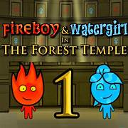
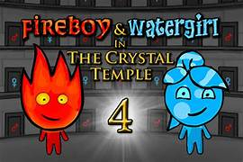
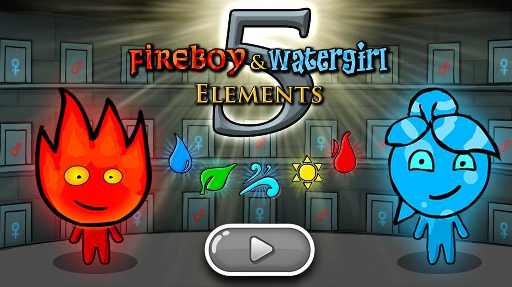
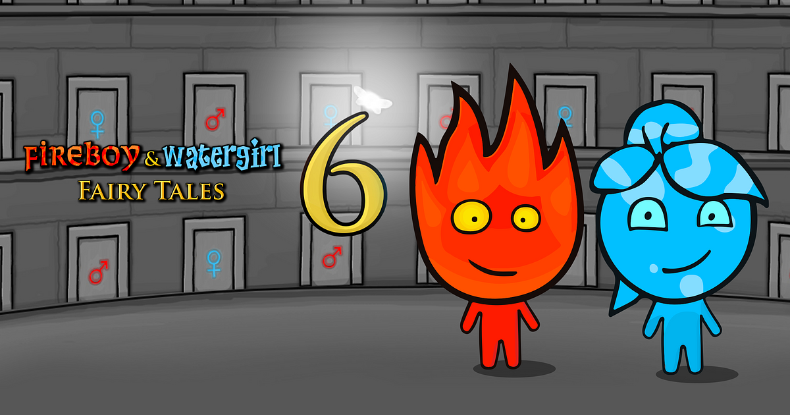

História
A franquia FireBoy and Watergirl começou sua jornada em 2009, quando o desenvolvedor Oslo Albet lançou o icônico "Fireboy and Watergirl In The Forest Temple" no site Armor Games. O jogo rapidamente se destacou por suas mecânicas únicas e leveza, especialmente atraente para jogadores com PCs menos potentes. Essencialmente, a série se classifica como jogos de plataforma que desafiam os jogadores com quebra-cabeças que exigem cooperação. O componente multiplayer cooperativo foi fundamental para o sucesso do primeiro título, onde os jogadores controlam dois personagens: Fireboy, que representa o fogo, e Watergirl, que representa a água. Essa dinâmica é o grande atrativo, pois cada personagem possui suas próprias limitações e habilidades, criando uma jogabilidade que exige estratégia e trabalho em equipe. Com um design focado no modo multiplayer, Fireboy e Watergirl desafiam os jogadores a resolver quebra-cabeças e avançar em níveis de plataforma, onde as interações entre os elementos são cruciais. Cada personagem tem um conjunto similar de movimentos, mas o ambiente do jogo apresenta perigos específicos para cada um, tornando a cooperação essencial. Essa característica não apenas proporciona diversão, mas também ensina habilidades como raciocínio lógico e colaboração. Desde o lançamento do primeiro jogo, a franquia se expandiu para cinco títulos, cada um trazendo novas mecânicas que aprimoram a experiência de jogo. Por exemplo, "The Ice Temple" introduz fluxos de luz, portais e física avançada, enriquecendo ainda mais a jogabilidade. Apesar de todas as sequências, o primeiro jogo continua sendo o mais popular, consolidando a série como um clássico cult entre crianças e jovens. No geral, Fireboy e Watergirl oferecem uma experiência divertida e educativa, ideal para momentos de lazer com amigos, provando que jogos simples podem ter um impacto duradouro no mundo dos games.
Conheça mais sobre os jogos
Fireboy and Watergirl in The Forest Temple
O primeiro jogo da franquia Fireboy and Watergirl, lançado em 2009 e convertido para HTML5 em 2018, é ambientado no Templo da Floresta e apresenta 32 níveis desafiadores. Ao longo da jornada, os jogadores conhecem as limitações e dinâmicas dos elementos fogo e água, enfrentando quebra-cabeças que exigem trabalho em equipe e agilidade. A dificuldade aumenta gradualmente, forçando os aventureiros a acionar alavancas e interagir com objetos do cenário, enquanto desvíam de armadilhas e obstáculos. Essa combinação de desafios intelectuais e ação rápida fez deste título o primeiro passo para o sucesso da franquia.
Fireboy and Watergirl 2: Light Temple
O segundo game da série,Fireboy and Watergirl 2 in Light Temple**, repete a fórmula do original, mas apresenta um templo com novos desafios. Um exemplo são os enigmas que envolvem raios de luz refletidos, que abrem novas portas. Outra adição são os inimigos inéditos, como a “gosma verde”, que é igualmente perigosa para Fireboy e Watergirl; se tocar nos protagonistas, é “game over”. Nesta segunda aventura, fogo e água retornam para enfrentar uma nova série de quebra-cabeças, com todas as fases ambientadas no Templo da Luz, que permite a introdução de novas ideias. O jogo conta com 40 fases, oferecendo mais desafios do que o primeiro título e ampliando o nível de dificuldade. De todo modo, a experiência continua muito atrativa, com a combinação de enigmas e obstáculos, mantendo o charme da franquia.
Fireboy and Watergirl 3: Ice Temple

Em Fireboy and Watergirl 3: Ice Temple , os heróis precisam explorar um templo gelado repleto de novos obstáculos elementais. Fireboy enfrenta dificuldades em superfícies de neve, enquanto Watergirl se move mais devagar nessas áreas, tornando o trabalho em equipe essencial para superar os desafios. Esse terceiro jogo da famosa franquia, conhecida como Fogo e Água Online no Brasil, traz limitações adicionais que exigem soluções criativas dos jogadores. No Templo do Gelo, os personagens são constantemente desafiados por quebra-cabeças complicados, com a dificuldade crescendo a cada fase. A aventura conta com 36 desafios intrigantes e uma variedade de armadilhas e obstáculos que mantêm os jogadores engajados por um bom tempo.
Fireboy and Watergirl 4: Crystal Temple
Fireboy and Watergirl 4: Crystal Temple introduz uma nova mecânica empolgante na série, permitindo que os jogadores utilizem cristais mágicos para criar portais de teletransporte. Esses portais oferecem novas possibilidades, mas também apresentam riscos, já que a escolha do lado pode levar a lugares perigosos. Lançado em 2014 e convertido para HTML5 em 2018, este quarto título se destaca por sua jogabilidade aprimorada. As fases do Templo de Cristal são repletas de desafios, com 38 níveis que mantêm a qualidade característica da franquia e garantem horas de diversão, embora exijam cautela ao explorar os portais.
Fireboy and Watergirl 5: Elements
O penultimo lançamento da série, FireBoy and Watergirl 5: Elements, leva os jogadores a explorar os templos do fogo, da água e do ar, proporcionando uma combinação equilibrada de todas as mecânicas dos jogos anteriores. Lançado em 2019 após alguns anos de espera, o game foi desenvolvido em HTML5 e serve como uma síntese das mecânicas já conhecidas. Os jogadores podem novamente usar cristais mágicos para criar portais, além de resolver quebra-cabeças envolvendo raios de luz que desbloqueiam novas áreas nas fases. Diferente dos títulos anteriores, a aventura não se limita a um único templo, apresentando novas fases em templos de fogo, água e vento, além dos já conhecidos. Com mais de 40 níveis, Fireboy and Watergirl 5 é o jogo mais longo da franquia e oferece uma diversidade impressionante de armadilhas, obstáculos e quebra-cabeças. É uma experiência que mostra o melhor que a série tem a oferecer!
Fireboy and Watergirl 6: Fairy Tales
Após várias aventuras nos “templos elementais”, Fogo e Água embarcam em uma nova jornada mágica em Fireboy and Watergirl 6: Fairy Tales, lançado em 2021. Neste jogo, os jogadores enfrentam fases desafiadoras, agora com a adição de “fadas ajudantes”. É fundamental trabalhar em equipe e contar com a colaboração dessas criaturas encantadas para superar os obstáculos. Com 31 níveis, o game traz comandos adicionais relacionados às fadas, mas a mecânica permanece acessível. Os jogadores só precisam se concentrar em encontrar soluções dentro do tempo disponível.
Onde encontrar os jogos
Você pode jogar os jogos da série Fireboy and Watergirl nos seguintes sites: